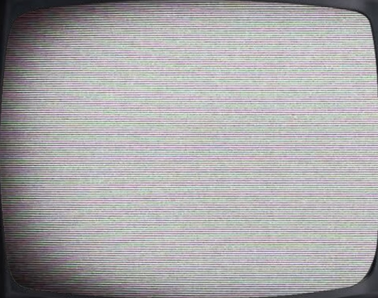
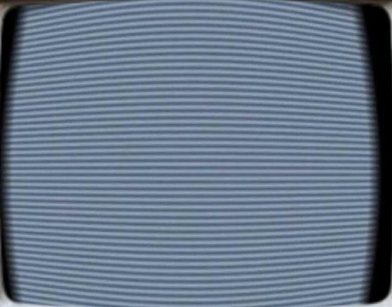
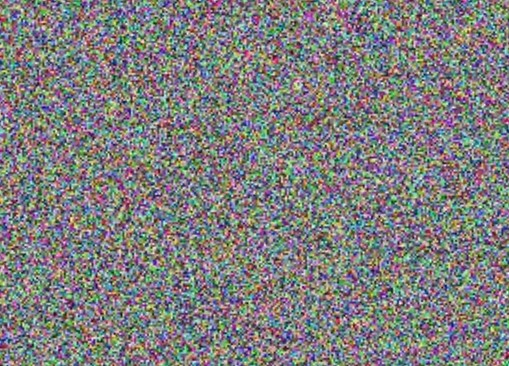
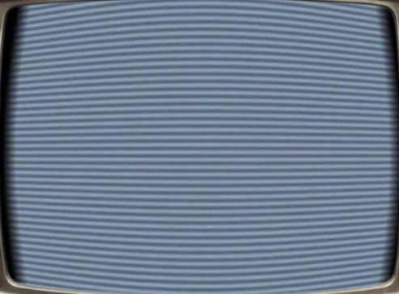
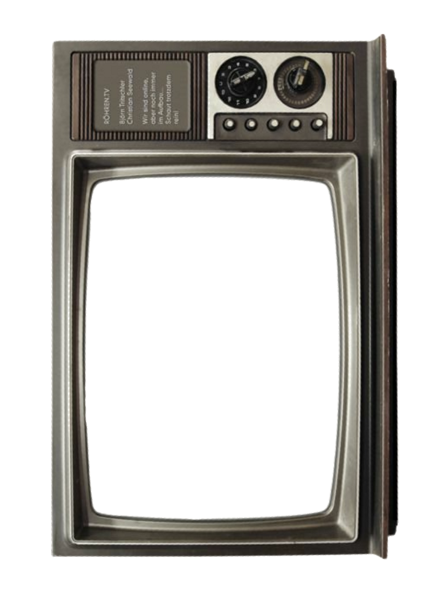
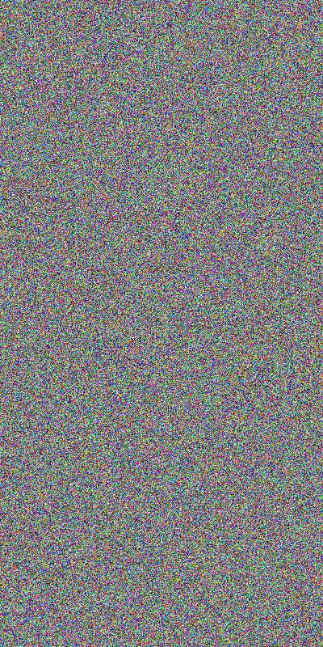

Click a TV to watch the videos

Journalism
Creative Projects

Commercial



Video Editing
This portfolio is organised into three sections: Creative Projects, Journalism, and Commercial. The first two feature academic projects completed during my Master's studies, while the Commercial section showcases campaign-based video content produced during my internship.
← Back